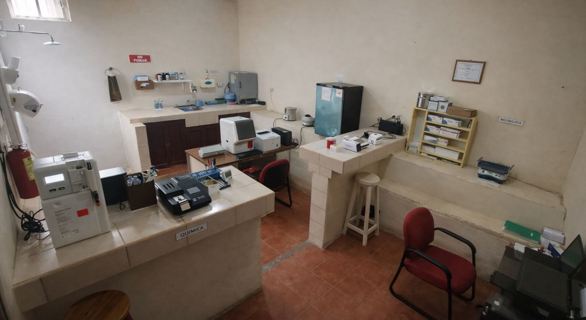

Actividad realizada
Reinauguración del Laboratorio Santa María
La ceremonia de reinauguración del Laboratorio Santa María y la develación de la placa de agradecimiento marcaron un momento importante para el fortalecimiento de los servicios brindados por el proyecto.
Esta actividad representó el impacto del proceso de modernización y equipamiento del laboratorio, orientado a mejorar la atención y la capacidad diagnóstica para beneficio de la comunidad.